1. ROS master
The ROS master will be used as servicebus between the different nodes. The ROS master node provides naming and registration services to the rest of the nodes in Willy. It tracks publishers and subscribers to topics. The role of the ROS Master is to let the nodes interact with each other without a direct connection.
1.1. Repository
1.2. How to run?
To run only the ROS master the Docker can be used. The Dockerfile of ROS master is automatically built on Dockerhub.
Run the build docker image:
docker-compose upFor development purposes it can be usefull to build the Dockerfile locally and to use this image. The docker-compose.build.yml file builds first the image and after the build start the container.
docker-compose -f docker-compose.yml -f docker-compose.build.yml up2. New ROS master on Lubunto for Multimaster node for Willy
Because Multimaster is not available for Raspbian, node master node of Willy will be using Lubuntu. ROS.org states that the best way is to use a preinstalled version http://wiki.ros.org/ROSberryPi/Installing%20ROS%20Kinetic%20on%20the%20Raspberry%20Pi
An SD Card Image with Ubuntu 16.04 (LXDE) and ROS Kinetic installed can be downloaded here for the Raspberry Pi 3. The here refferres to: https://downloads.ubiquityrobotics.com/ On this site the left button is choosen. This brings to https://downloads.ubiquityrobotics.com/pi.html.
For Willy the latest version (2018-11-15-ubiquity-xenial-lxde) is choosen: https://cdn.ubiquityrobotics.net/2018-11-15-ubiquity-xenial-lxde-raspberry-pi.img.xz
The SD image is also stored on the SharePoint site of Willy.
The image is flashed to the 16 GB SD card with Rufus 3.4, but any flash program can be used.
The standard user on the node is ubuntu with the password ubuntu as is stated on the site of the supplier.
The following adjustments to the image are made: To ensure that the startupscripts from the supplier is disabled:
sudo systemctl disable magni-base
In /etc/ubiquity/env.sh the starting of roscore is already added, through roscore.services
Change /etc/ubiquity/env.sh
remove .local from export ROS_HOSTNAME=$(hostname).local
Change /etc/systemd/system/roscore.service Add extra line after line starting with ExecStart
ExecStartPost=/bin/sh -c ". /home/ubuntu/multimaster.sh
Add file /home/ubuntu/multimaster.sh:
rosrun master_discovery_fkie master_discovery >/dev/null 2>&1 & rosrun master_sync_fkie master_sync >/dev/null 2>&1 &
Update and upgrade the OS:
sudo apt-get update sudo apt-get upgrade
Through the GUI WLAN has to be disabled.
Install openssh server and check status:
sudo apt-get install openssh-server sudo service ssh status
The complete environment of ROS with multimaster is included.
The node on Willy will be the ROS master with portnumber 11311, which is the standard setting.
Enable multicast feature on the node: edit the /etc/sysctl.conf file and add the following line:
net.ipv4.icmp_echo_ignore_broadcasts=0
Edit /etc/hostnode:
Change hostname to brainnode
edit /etc/hosts:
add all the hosts of Willy and Skylab. The correct info can be found on SharePoint.
Install VNC on the node:
sudo apt-get update sudo apt install xfce4 xfce4-goodies tightvncserver
Add a secure password on VNC with:
vncserver
Reference for VNC: https://www.digitalocean.com/community/tutorials/how-to-install-and-configure-vnc-on-ubuntu-16-04 :numbered: :toc: :toclevels: 5 :icons: font
3. Brain
The brain brings all the components together. The brain make decisions how and where to drive. This is based on priorities which will be explained on the background chapter.
3.1. Repository
3.2. Prerequisites
All other components must be running for the brain to work correctly.
3.3. How to run?
The brain will start automatic when the main start script of willy is started. The brain node can be started manually by going into the root of the brain repo:
python src/brain.py3.4. Technical design
The brain gathers a lot of inputs like: the joystick, move_base, AMCL pose, april tags and human detection. It processes these inputs and saves the latest messages in global variables. Every 100 milliseconds a tick in the brain passes where it updates the state machine and sends outputs like the cmd_vel which controls the motor driver. Multiple input can send input to the brain and the brain will proxy one of the inputs depending on its state.
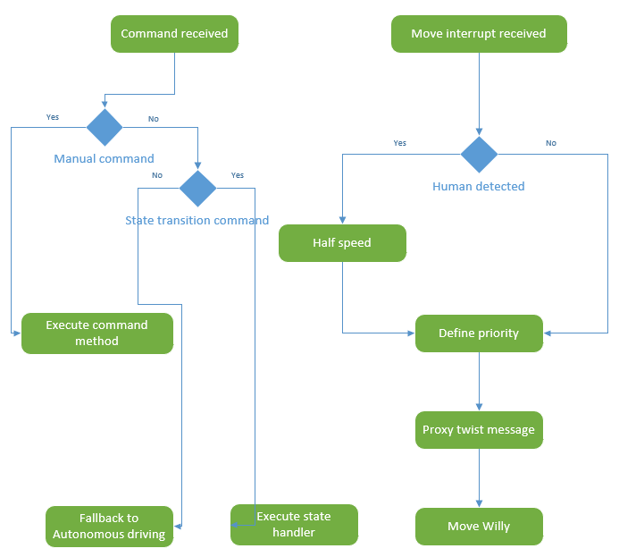
ROS topics are registered in the brain with a callback function which will run asynchronously alongside the main thread when a message is received.

The brain uses a state machine to keep track of it’s current task. The following image is a diagram of the state machine:
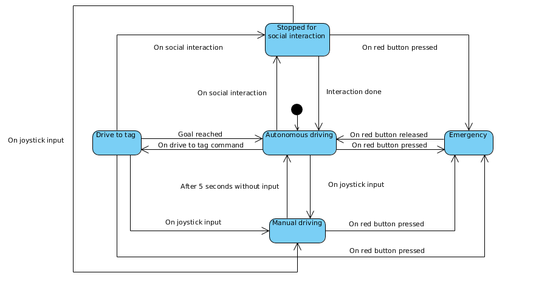 :numbered: :toc: :toclevels: 5 :icons: font
4. Sonar
The sonar is a node to process the raw sonar information to the sonar topic.
4.1. Repository
4.2. How to run?
The sonars will start automatic when the PI is running. The sonar node can be started manually by going into the root of the sonar repo:
./START start4.3. Background information
To prevent collisions, ultrasonic sensors are used. These sensors measure distance by using sound. This is made possible by sending out bursts of high frequency noise, and then waiting for a reflection of that sound using the HC-SR04 ultrasonic sensor.

By using this data Willy is be able to decide if he is able to drive any further in a certain direction. In the event of Willy being not able to drive any further, he will decide if there is a direction where he is able to drive further. This way Willy will be able to drive around autonomously without collisions. How Willy reacts to objects in his navigation is researched by a previous group. (Navigation design v0.1, 2017)
The datasheet [1] for the HC-SR04 is included in the sources at the bottom of this document.
The sensors all use 5V as can be seen in the schematic:

As shown in the schematic above, all the 3 sensors are connected to the Arduino.
The sensors are connected in the following order:
| Arduino Digital Pin Number | Sonar Sensor Number |
|---|---|
3 |
Trigger Sensor 3 |
4 |
Echo Sensor 3 |
5 |
Trigger Sensor 0 |
6 |
Echo Sensor 0 |
7 |
Trigger Sensor 1 |
8 |
Echo Sensor 1 |
9 |
Trigger Sensor 2 |
10 |
Echo Sensor 2 |
11 |
Trigger Sensor 4 |
12 |
Echo Sensor 4 |
The sensors are placed as follows:
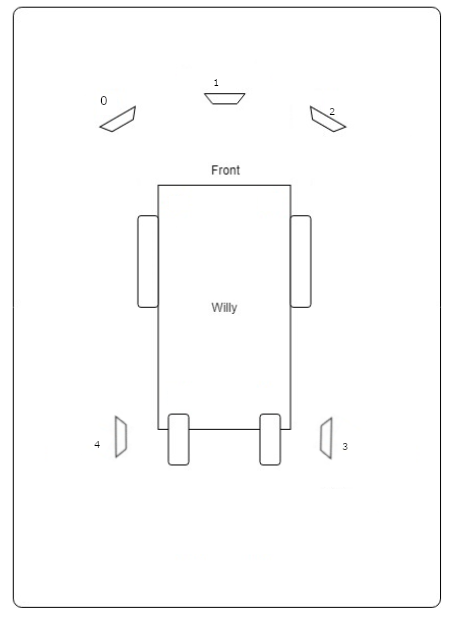
It should be noted that not all the sensor are read at the same time. The front sensors are read in a sequence. Only the lowest value is publisched on the topic. The side sensors are published on the same topic, but have a different ID. Therefore move_base is able to handle the data in the correct way. :numbered: :toc: :toclevels: 5 :icons: font
5. Lidar
The lidar is a node to process the raw lidar information to the lidar topic.
5.1. Repository
5.1.1. Background
The previous group has also done research on a Lidar sensor. Unfortunately the previous documentation stated that it was not possible to link a Lidar to ROS. Also other methods where somehow researched by a previous group but not in the form of a Lidar. (Research localization system v1.1, 2017)
A LIDAR sensor uses a laser to measure distance. With these measurements the sensor makes a map of all the objects in the environment.

The previous group has done some research concerning LIDAR and the link to ROS. But came to the conclusion that it is not possible to create a link between LIDAR and ROS. Therefore they decided to not implement the LIDAR sensor.
After doing some research we found that it is possible and supported to link ROS to a LIDAR sensor.
At this stage we use the LIDAR to navigate with Willy. The sensor is placed at the front of the robot.
The LIDAR is connected with an ethernet connection via a router to the pc. :numbered: :toc: :toclevels: 5 :icons: font
6. Localization and navigation
The localization and navigation stack is collection of nodes which process lidar data and use it to navigate.
6.1. Repository
6.2. How does it work
6.2.1. Navigation
[map_server|1] -----\ [map_server|2]---\
\ \
[lidar node] -> [lidar_filters] -> [laser_scan_matcher] -> [AMCL] ------> [move_base] -> [cmd_vel]
\ / /
\-----------------------------------/----------------/
The lidar node captures the data from the hardware device and puts it on the service bus. However in the case of Willy the lidar data is not always perfect since the metal frame of the robot creates invalid data points. These invalid data points confuse the algorithms. This is fixed by adding the 'scan_to_scan_filter_chain' node from the 'laser_filters' package. Using a chain of two filters it is possible to "crop" the lidar data. This data is fed to the other nodes.
The 'laser_scan_matcher' node uses the filtered lidar data to create odometry data based on the moving data points. The odometry data however only tells the stack how much it has moved relative to its starting position. Odometry data is also prone to drift especially when using the 'laser_scan_matcher' since it can’t handle big empty spaces. This is where the 'AMCL' node comes into play. The 'AMCL' node takes into account: the estimated starting position, odometry offset from the starting point, lidar data and a lidar map. It can determine the odometry drift based on the lidar data and the map and compensate with a second offset. Because the 'AMCL' also takes into account the map we now have localization.
'AMCL' uses the first instance of the 'map_server', this map server publishes the raw map which was generated by 'hector_map', just slightly cropped and rotated to improve performance. The 'move_base' node uses the second instance of the 'map_server' which publishes a modified map in which incorrectly mapped walls are manually filled in. This is done because the lidar can’t see reflective materials like glass or mirrors. By filling in these areas the 'move_base' will not try the navigate through glass. The 'AMCL' node however needs a map is is as close to the lidar data so it can’t localize itself.
This position is then fed into the 'move_base' node which uses the lidar data and map to create a maps of obstacles called costmaps. It then uses the position from 'AMCL', the costmaps and a goal to generate a path and start giving commands to the robot to follow that path as closely as possible
6.2.2. Mapping
[lidar node] -> [lidar_filters] -> [hector_mapping] -> [map_saver]
\---------> [rosbag capture]
The mapping process uses the same lidar data and lidar filters. The raw lidar data can also be captured in a bag-file so this mapping process can be redone offline. The lidar data is fed into the 'hector_mapping' node which will generate a 2d map based on the lidar data.
However this process is not always perfect since it has trouble with seeing transparent and reflective surfaces. Objects like chairs and tables can be problematic since the surface area of the legs are small and easy to miss if the lidar is not close enough. Furthermore if objects become larger above the height at which the lidar measures the object may be drawn to small on the map causing collisions.
The 'hector_mapping' node is not great at erasing objects from the map. So it is best to map a area when there are no moving objects like humans.
6.3. How to run?
To run the localization and navigation stack you need to have a instance of ROS master and the Lidar node running
To start autonomous navigation you need to use the 'start-live-navstack.sh'
./start-live-navstack.shThe navigation stack requires a Lidar map of the environment it must navigate in. This map can be built by manually moving the robot using the keyboard node and running the mapping process. The mapping process can be started with the following command
./start-live-mapping.shIn order to use this map we need to save a copy. To save the map that is on the service bus use the following command:
rosrun map_server map_saver -f {name of save file}It has proven to be useful to test the software in a VM when access to the hardware is limited. To do so just run the 'start-sim-navstack.sh' or 'start-sim-mapping.sh' instead of the commands listed above. These commands will start a replay of a rosbag containing lidar data instread of the real thing. They also set a parameter which tells the nodes to accept out of date timestamps which are required to function in a simulated environment :numbered: :toc: :toclevels: 5 :icons: font
7. Motor controller
The motor controller listens to the drive topic and controls the motor of Willy.
7.1. Repository
7.2. How P&G Pilot Plus works
The communication between the P&G (Penny and Giles) Joystick and Motorcontroller is done with a serial connection. Two variables in within the datapacket contain the throttle and direction. Both are signed integers with an limit of -100/100. They illustrate the 360 degrees position of the joystick.
7.2.1. Arduino reading /cmd_vel messages from ROS
The geometery twist messages broadcasted by ROS will be translated by the Arduino motorcontroller to match the serial communication done by the Joystick controller from P&G. The data send from ROS will be multiplied with 100 and capped on their max value. Only two axes of the message are being used.
throttle = twistMsg->linear.x * 100;
direction = twistMsg->angular.z * 100;The P&G Joystick emites a datagram package that the Willy motorcontroller emulatues. Within the datagram there is a forward/back integer and a direction (left/right) integer. Those are calculated from the twistMsg to the respective P&G values.
7.3. Broadcasting to the emergency channel
Every iteration within the critical loop of the state of the emergency button will be broadcasted. The motor controller will interupt the circuits on a hardware level when the button is pushed. No software has been written to do any logic with the state of the button other than broadcasting its state.
7.4. How to compile?
All the dependencies (headers from ros) are copied from the Kinetic Kame release into the project. You’ll need to the following to compile and flash the Arduino:
-
VSCode with Platform.io extension installed
-
Arduino MEGA
When building for the first the Platform.io will add some files in the .vscode directory that can be ignored. Its not recommanded to add them to GiT. The files have hardcoded paths containing the username and are ignored. To flash the Arduino simply press Upload in the Plaform.io extension and sit tight. :numbered: :toc: :toclevels: 5 :icons: font
8. Joystick
The joystick is a node to process the raw joystick input signal to the direct input topic.
8.1. Repository
8.2. Prerequisites
The Laptop requires the device /dev/input/js0 to be connected to the host. In most cases a knockoff PS3 controller or Xbox controller wil do the trick. The controller requires to have select button to be pressed when controlling Willy with the right analog stick. This component uses the default settings for teleop twist joy package, which may require a bit practice to maneuver through the building. :numbered: :toc: :toclevels: 5 :icons: font
9. Social interaction
The social interaction creates the interaction of Willy. He listens and speaks with people.
The social interaction is build with NodeJS. NodeJS has a webserver and connects with web sockets to the frontend of Willy. The NodeJS server processes all information of the interactions and passes this to the frontend. The frontend doesn’t contains any logic of the social interaction, only the logic of displaying information to the website.
9.1. Repository
9.2. How to run?
./START start9.2.1. Nodejs packages (npm)
Never run npm install outside the Docker container to prefent OS conflicts between the Nodejs packages.
Run the npm install command:
npm install9.2.2. Stylesheets
The source files for the stylesheet are written in SASS. The should be compiled to CSS files what a browser can process. Gulp compiles the SASS files to CSS files.
Compile only once the SASS file:
npm run sass:buildCompile the SASS file on every file change:
npm run sass:watch9.3. Websocket API
API documentation for the connection between de NodeJS server and frontend.
| Name | Purpose | Type | Example data |
|---|---|---|---|
changeMood |
Change the body class of the website |
String |
blue |
changeFormat |
Change the format of the content and Willy image wrapper |
Object |
{willy_height: '80%', content_height: '20%'} |
changeContent |
Change the content below Willy |
String |
<h1>Hi!</h1> |
textInput |
All the text input will be pushed |
String |
hello willy |
9.4. Social interaction Flow
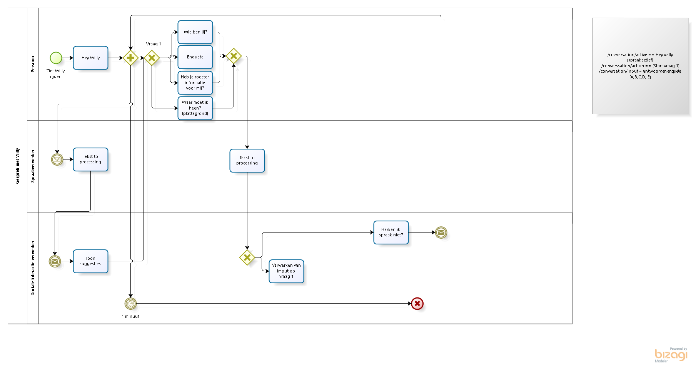
9.5. Interactions of Willy
The interaction has multiple type of interactions.
9.5.1. About Willy
Tell information about Willy and show the image of Willy.
9.5.2. Information with a map
Show a map at the frontend of Willy.
The map requires a image file which will be shown to the user. This file should be located at the path public/assets/map.png.
9.5.3. Information with the schedule
Show a image with the schedule at the frontend of Willy.
The schedule requires a image file which will be shown to the user. This file should be located at the path public/assets/schedule.png.
9.5.4. Information with the directions
Show a image with the directions at the frontend of Willy.
The map requires a image file which will be shown to the user. This file should be located at the path public/assets/directions.png.
9.5.5. Survey
Take a survey with Willy. The user can ask for the survey and Willy will ask the questions.
Survey questions
Survey information file src/interactions/assets/survey.json.
The information file contains the name, description and author of the survey.
Survey questions file src/interactions/assets/survey.csv.
The questions file contains all the questions for the survey.
Survey answers
Survey answers src/interactions/assets/survey_answers.csv.
9.6. ROSNodeJs
9.7. Diagrams interactions
Class diagram: 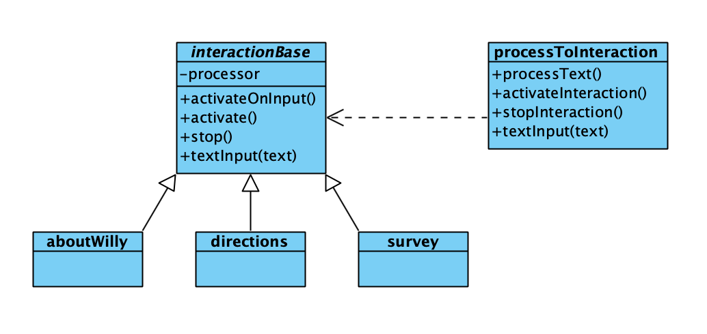
NodeJS has no interfaces, so the application connects to a instance of the interaction base.
Sequence diagram: 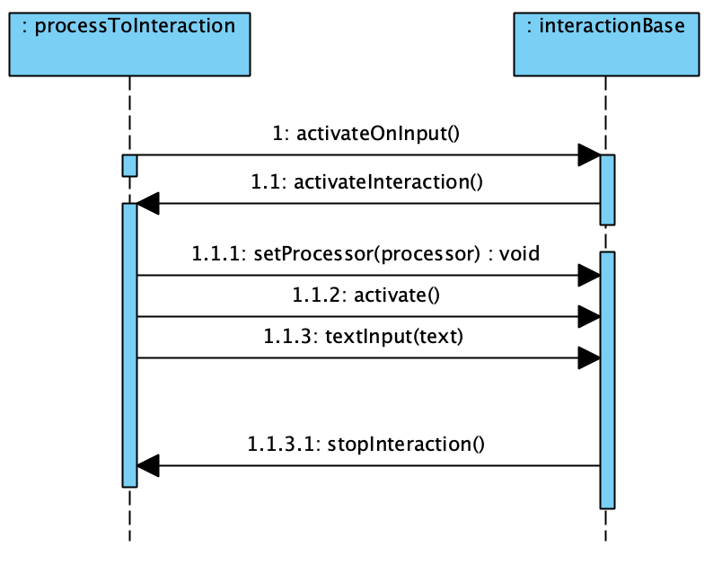
9.8. Screen Designs
9.8.1. English
-
This is the screen shown when Willy is driving around, and there is not yet a person to interact with.

-
This screen is shown when a person is starting to interact with Willy. At the bottom there are two arroys pointing to the garbage bins.

-
After that Willy asks permission to ask a question to the person in front of Willy.

-
When the person says 'no', then this screen is shown, after wich the robot continues driving.

-
When the person says 'yes', a random question is shown with a number of multiple choise answers.

-
When the given answer is wrong, this screen is shown.
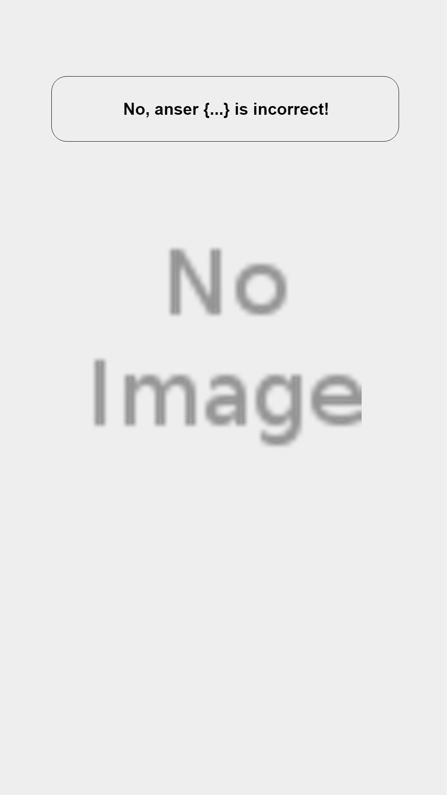
-
When the given answer is right, this screen is shown.
-
After the question, Willy starts to play an informative video about garbage.

9.8.2. Dutch
For comments at each image, see the English version above.
-
-
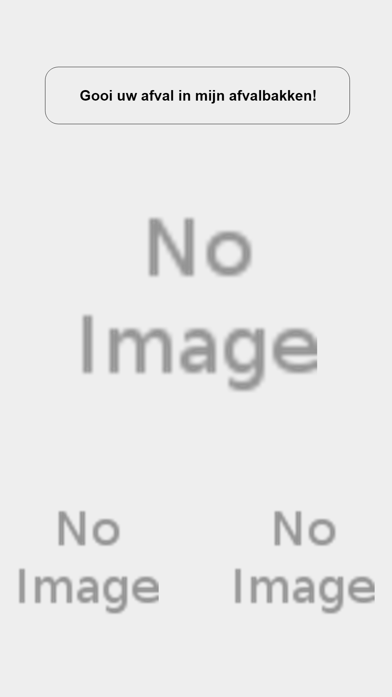
-
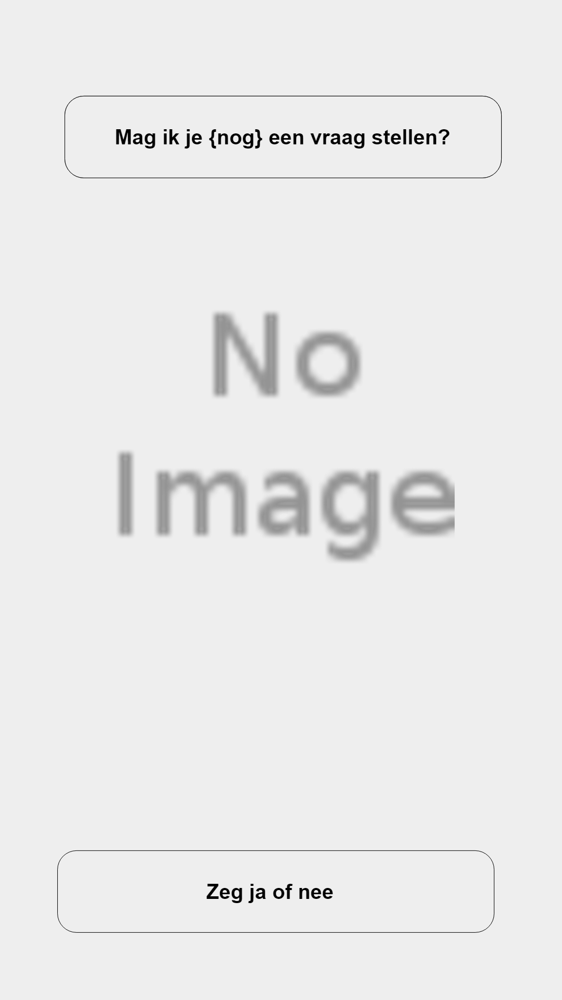
-
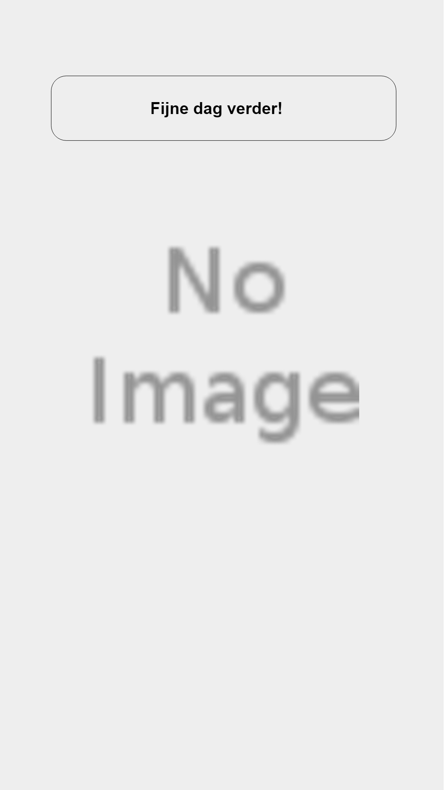
-
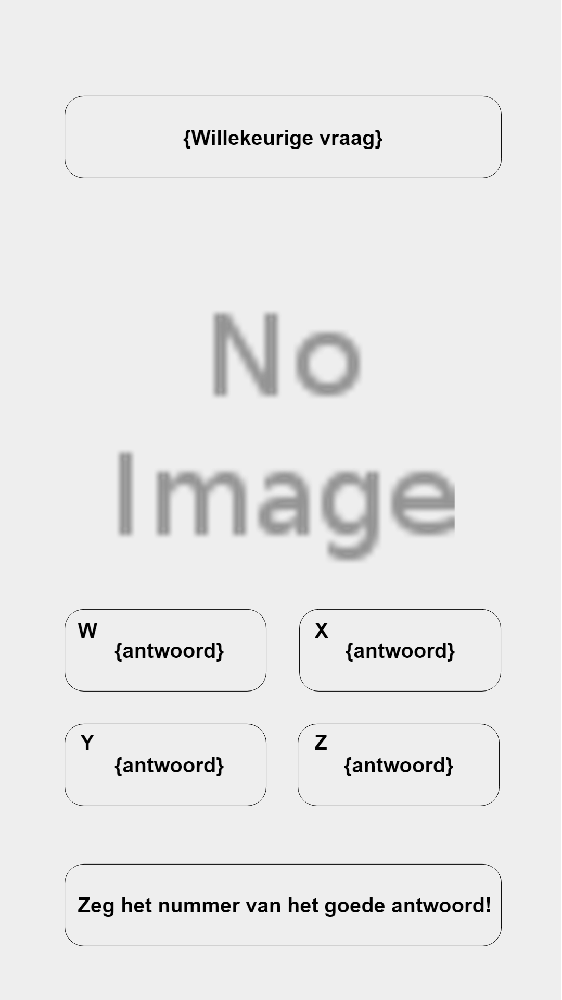
-
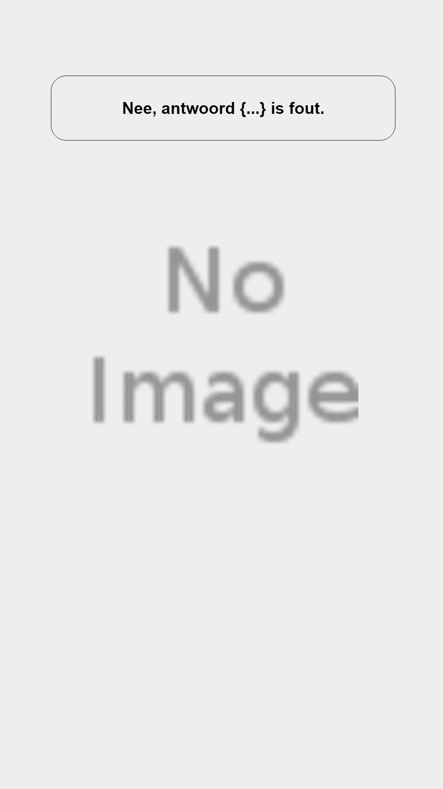
-

-
 :numbered:
:toc:
:toclevels: 5
:icons: font
:numbered:
:toc:
:toclevels: 5
:icons: font
10. Speech recognition
Listening to speech is located on the SI node and is done with a Python script. The script is published at the Github location: https://github.com/Windesheim-Willy/speech_recognition/blob/master/start_recognition.py . Two essential services are used:
-
Speech recognition (speech to text conversion) of Google through the use the module speech_recognition
-
Fuzzy logic search option throug the use of the module fuzzywuzzy
11. Flow
The general flow in the script is as follows:
-
The neccesary modules are imported
-
The hit ratio used for fuzzy logic resemblance is set
-
Two topics are set for publishing
-
Speech is captured through the micropohone
-
Speech is transferred to Google for translation in clear text in Dutch
-
Text is published on topic /interaction/clear_text
-
Text is compared with fuzzy logic to keywords, when hit the number 1 is published on topic /interaction/is_active